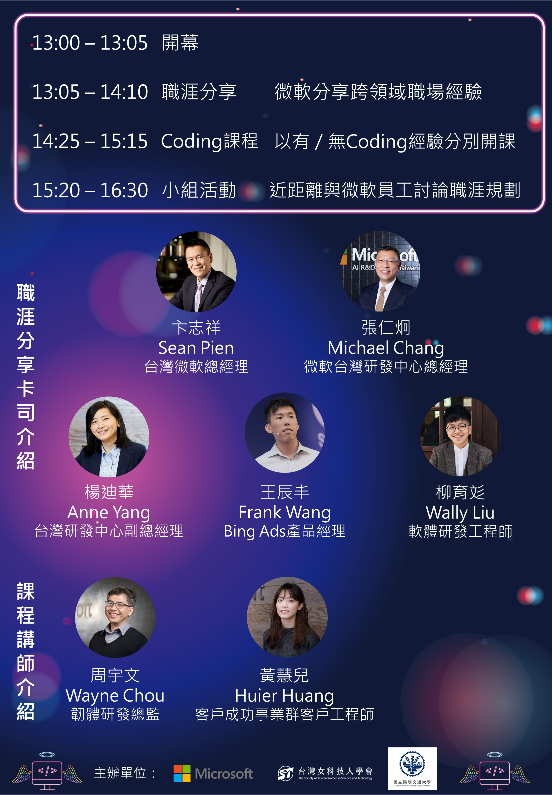

科技業的多重宇宙 - 無限的職涯發展性 (Infinity and Beyond) 報名開跑
👉名額有限，2/20報名開跑，免費參加，手刀報名

什麼是Coding Angels?
Coding Angels 是微軟歷年來專為女性大專院校生所舉辦的科技女力培訓活動，期望透過精實的活動安排賦能科技女力，鼓勵所有對科技產業感興趣的學生勇敢追夢、跨域學習，並藉此了解產業面貌，及早為職涯作出規劃。今年的主題以科技業的多重宇宙 - 無限的職涯發展性 (Infinity and Beyond)出發，期待同學們來多元思考未來不同跨入科技業的方式與管道。
講者陣容華麗、課程精彩可期
本次活動由台灣微軟偕同台灣女科技人學會及國立陽明交通大學主辦，邀請的講者們實力堅強，將分別分享他們跨領域的職場生涯，包括如何由資工背景成為業務主管，或由法商背景成為工程師或產品經理等。我們也分別針對無Coding背景、具Coding背景的學生設計由淺入深的課程並介紹相關資源，希望同學能收穫滿滿！
與微軟正職員工交流的好機會
微軟員工與年輕學子將分組進行職涯經驗分享與討論，讓同學可以近距離的與微軟員工溝通，希望更貼近同學的需求。不僅能透過此機會深入了解科技人才的跨領域溝通能力與職涯發展的無限可能，更能和來自不同領域的學生互相交流，實屬難得！
2/20報名開跑，免費參加，名額有限，妳還在等什麼
趕快按下連結填寫報名表，錯過再等一年
- 活動時間 Date: 2023/03/18 (六) 13:00 - 16:30 (12:30開始報到)
- 活動地點 Location: 台灣微軟辦公室(台北市信義區忠孝東路五段68號19樓)
- 活動對象 Participant: 全台大專院校女學生
- 報名時間 Registration: 2023/02/20 中午12:00 ~ 2023/03/06 中午12:00截止